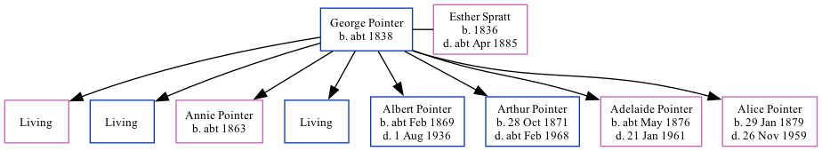

George Pointer c1838 - [ Home ] | [ Calendar ] | [ Surnames Index ] | [ Family History ]George Pointer , the husband of Esther Spratt (the three times great-aunt of Nigel Horne ), was born in Birchington, Kent, England c. 1838 and married Esther (with whom he had 8 children: Abigail Jane , Augustus , Annie Elizabeth , Alfred G , Albert William , Arthur Thomas , Adelaide Agnes Esther and Alice Mary , along with 3 surviving children) in St Nicholas-at-Wade, Kent, England on 14 Oct 18581 .
Throughout his life, George lived in several places: at John Street, St Peters, Thanet, Kent on 7 Apr 18612 ; on Station Road in Birchington on 3 Apr 18813 ; and at Hughenden Terrace in Birchington on 5 Apr 18914 .
Children Annie Elizabeth was born c. 1863Albert William was born c. Feb 1869Arthur Thomas was born on 28 Oct 1871Adelaide Agnes Esther was born c. May 1876Alice Mary was born on 29 Jan 1879Citations Kent, Canterbury Archdeaconry marriages 1538-1928 - Findmypast 1861 England, Wales & Scotland Census - Findmypast (was age 23 and the head of the household) 1881 England, Wales & Scotland Census - Findmypast (was age 43 and the head of the household) 1891 England, Wales & Scotland Census - Findmypast (was age 53 and the head of the household) Media 1891 England, Wales & Scotland Census - GBC/1891/0005855702 Family Tree Map
Generated by ged2site . Last updated on Feb 19, 2025